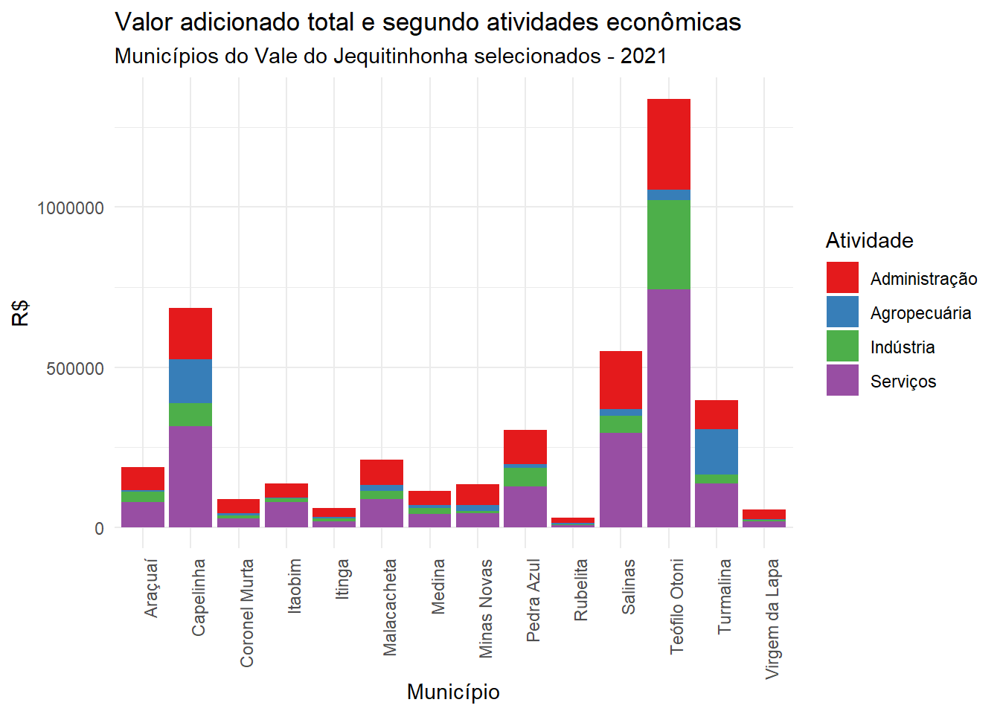
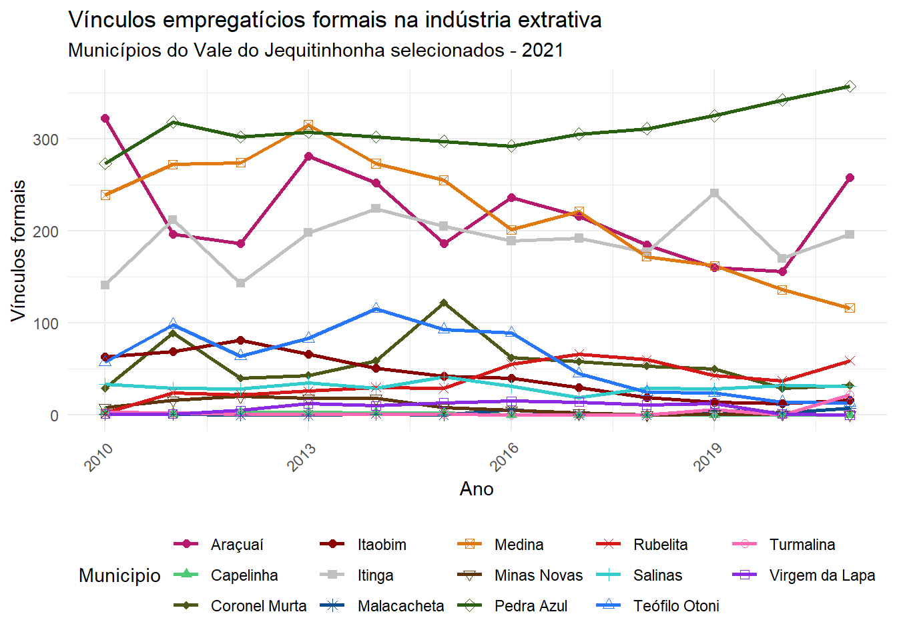

| Produto Interno Bruto, ranking do PIB, PIB per capita e atividades econômicas mais importantes | ||||||
|---|---|---|---|---|---|---|
| Município | PIB (R$ mil) | PIB per capita (R$) | Ranking Estadual | Primeira atividade mais importante | Segunda atividade mais importante | Terceira atividade mais importante |
| Grupo 1 | ||||||
| Teófilo Otoni | 2.951.670 | 20.894 | 54 | Demais serviços | Administração, defesa, educação e saúde públicas e seguridade social | Comércio e reparação de veículos automotores e motocicletas |
| Grupo 2 | ||||||
| Araçuaí | 520.019 | 14.164 | 202 | Demais serviços | Administração, defesa, educação e saúde públicas e seguridade social | Comércio e reparação de veículos automotores e motocicletas |
| Capelinha | 888.063 | 23.174 | 135 | Demais serviços | Administração, defesa, educação e saúde públicas e seguridade social | Comércio e reparação de veículos automotores e motocicletas |
| Salinas | 667.409 | 15.942 | 163 | Demais serviços | Administração, defesa, educação e saúde públicas e seguridade social | Comércio e reparação de veículos automotores e motocicletas |
| Grupo 3 | ||||||
| Itaobim | 308.690 | 14.702 | 299 | Demais serviços | Administração, defesa, educação e saúde públicas e seguridade social | Comércio e reparação de veículos automotores e motocicletas |
| Medina | 253.051 | 12.224 | 339 | Administração, defesa, educação e saúde públicas e seguridade social | Demais serviços | Comércio e reparação de veículos automotores e motocicletas |
| Minas Novas | 350.142 | 11.112 | 268 | Administração, defesa, educação e saúde públicas e seguridade social | Demais serviços | Produção florestal, pesca e aquicultura |
| Malacacheta | 235.819 | 12.709 | 353 | Administração, defesa, educação e saúde públicas e seguridade social | Demais serviços | Comércio e reparação de veículos automotores e motocicletas |
| Pedra Azul | 401.448 | 16.498 | 247 | Administração, defesa, educação e saúde públicas e seguridade social | Demais serviços | Indústrias extrativas |
| Turmalina | 443.706 | 21.879 | 228 | Produção florestal, pesca e aquicultura | Demais serviços | Administração, defesa, educação e saúde públicas e seguridade social |
| Grupo 4 | ||||||
| Itinga | 148.258 | 9.849 | 456 | Administração, defesa, educação e saúde públicas e seguridade social | Demais serviços | Indústrias extrativas |
| Rubelita | 80.085 | 14.278 | 636 | Administração, defesa, educação e saúde públicas e seguridade social | Demais serviços | Indústrias extrativas |
| Virgem da Lapa | 131.604 | 9.586 | 482 | Administração, defesa, educação e saúde públicas e seguridade social | Demais serviços | Comércio e reparação de veículos automotores e motocicletas |
| Coronel Murta | 119.865 | 13.016 | 515 | Administração, defesa, educação e saúde públicas e seguridade social | Demais serviços | Indústrias extrativas |
| Fonte: IBGE. Elaboração: FJP/Diretoria de Estatística e Informações. | ||||||
5 Produção, exportações e o emprego
5.1 Em termos da importância econômica das atividades presentes nos Municípios do Vale do Jequitinhonha selecionados, o que os dados dos PIB revelam?
Ao analisar a importância econômica das atividades presentes nos Municípios do Vale do Jequitinhonha selecionados com base nos dados do Produto Interno Bruto (PIB) de 2021, observa-se o seguinte:
Todos os municípios se destacam nas atividades relacionadas aos serviços públicos, incluindo administração, defesa, educação e saúde públicas, além da seguridade social, bem como no agrupamento que engloba todos os outros serviços, exceto o comércio.
Na composição das atividades mais importantes, a indústria extrativa ocupa a terceira posição em Medina e Pedra Azul (pertencentes ao Grupo 3), bem como em Itinga e Coronel Murta (pertencentes ao Grupo 4).
A produção florestal, pesca e aquicultura desempenha um papel crucial na economia de Turmalina e ocupa a terceira posição em Capelinha, Minas Novas e Rubelita.
As atividades comerciais desempenham um papel significativo nas economias de Virgem da Lapa, Malacacheta, Itaobim, Salinas e Teófilo Otoni, este último sendo o 61º maior PIB do estado de Minas Gerais e o 18º em termos populacionais.
A construção civil é a terceira atividade mais importante em Araçuaí, que, apesar de ter uma população maior que os demais municípios do Grupo 3, contribuiu menos para a economia mineira em 2021, ficando atrás dos municípios menores, como Turmalina, Pedra Azul e Malacacheta.
No que diz respeito ao PIB per capita, Turmalina, Capelinha e Salinas apresentam os maiores valores entre os 14 Municípios do Vale do Jequitinhonha selecionados. Em contrapartida, Rubelita, Virgem da Lapa e Itinga possuem os menores valores.

Fonte: IBGE (2021). Elaboração: FJP/Diretoria de Estatística e Informações.
5.2 Qual o panorama atual das exportações dos Municípios do Vale do Jequitinhonha selecionados?
Ao avaliar as informações do comércio exterior fornecidas pela Secretaria de Comércio Exterior (Secex) do Ministério do Desenvolvimento, Indústria, Comércio e Serviços (MDIC), observa-se uma nova dinâmica nas exportações dos Municípios do Vale do Jequitinhonha selecionados. Esses dados revelam detalhes sobre as principais commodities exportadas, assim como as tendências de crescimento nessas atividades. Seguem os destaques:
| Valor das Exportações FOB (US$) | |||||||||
|---|---|---|---|---|---|---|---|---|---|
| Municípios do Vale do Jequitinhonha selecionados - 2015-2023 | |||||||||
| Município | 2015 | 2016 | 2017 | 2018 | 2019 | 2020 | 2021 | 2022 | 2023 |
| Grupo 1 | |||||||||
| Teófilo Otoni | 20.472.933 | 17.313.826 | 16.731.717 | 17.485.724 | 33.106.156 | 11.663.942 | 12.332.265 | 21.818.571 | 37.417.242 |
| Grupo 2 | |||||||||
| Araçuaí | 620.887 | 685.273 | 749.913 | 341.260 | 323.337 | 168.164 | 3.805.234 | 56.276.729 | 237.105.118 |
| Capelinha | 0 | 0 | 6.041 | 552.926 | 239.562 | 69.999 | 6.769 | 187.298 | 230.133 |
| Salinas | 377.507 | 486.830 | 417.188 | 261.491 | 456.419 | 483.491 | 453.106 | 2.166.566 | 1.449.468 |
| Grupo 3 | |||||||||
| Itaobim | 0 | 0 | 0 | 0 | 0 | 0 | 0 | 0 | 0 |
| Malacacheta | 0 | 0 | 0 | 0 | 861.902 | 289.891 | 26.871 | 0 | 0 |
| Medina | 6.722.443 | 5.061.289 | 4.783.205 | 4.279.333 | 1.881.562 | 800.095 | 3.002.175 | 2.589.554 | 1.500.758 |
| Pedra Azul | 5.731.544 | 7.032.142 | 6.262.763 | 8.683.836 | 7.031.479 | 3.649.522 | 4.026.634 | 4.604.893 | 2.761.905 |
| Turmalina | 0 | 0 | 0 | 0 | 92 | 0 | 0 | 0 | 0 |
| Grupo 4 | |||||||||
| Coronel Murta | 96.564 | 112.812 | 34.447 | 0 | 0 | 0 | 0 | 0 | 0 |
| Itinga | 1.452.824 | 1.961.910 | 1.587.119 | 1.771.054 | 1.161.498 | 1.398.663 | 1.097.459 | 694.645 | 70.476.040 |
| Rubelita | 76.192 | 0 | 0 | 0 | 0 | 0 | 56.580 | 0 | 0 |
| Virgem da Lapa | 56.201 | 304.248 | 344.763 | 148.954 | 222.262 | 446.061 | 264.154 | 234.765 | 65.475 |
| Nota: Valor FOB (US$) | |||||||||
| Fonte: COMEX-STAT | |||||||||
Grupo 1
- Teófilo Otoni se destacou pela exportação de pedras preciosas e semipreciosas (exceto diamantes), classificando-se entre os três maiores exportadores desta categoria, ao lado de Governador Valadares e Itabira.
Grupo 2:
No caso de Araçuaí, o destaque era a exportação dentro da categoria “granito, pórfiro, basalto, arenito e outras pedras de cantaria ou de construção”. A partir de 2019 o destaque maior e crescente foi para “matérias minerais não especificadas nem compreendidas em outras posições”, abrangendo minerais como vermiculita, perlita e cloritas não expandidas, espodumênio (uma fonte primária de lítio), areia de zircônio, minerais de metais de terras raras, entre outros. O ritmo de crescimento observado nessa categoria desde 2019 fez com que em 2023, as exportações alcançassem US$ 236 milhões (FOB), , posicionando Araçuaí logo atrás do município de Nazareno (US$ 260 milhões). Ainda para Araçuaí, as “pedras preciosas (exceto diamantes) ou semipreciosas não montadas” apareceram nos registros mais recentes na segunda posição.
Salinas apresentou suas exportações nas seguintes categorias: “granito, pórfiro, basalto, arenito e outras pedras de cantaria ou de construção”; “pedras de cantaria ou de construção (exceto de ardósia) trabalhadas e obras destas pedras” e “alcool etílico não desnaturado, aguardentes, licores e outras bebidas espirituosas”. Já Capelinha teve como registro principal as exportações de “café, mesmo torrado ou descafeinado, cascas e películas de café”.
Grupo 3:
Os registros de exportação reveleram que em Medina, a principal categoria de produtos exportados foi a de “granito, pórfiro, basalto, arenito e outras pedras de cantaria ou de construção” e em Pedra Azul, o grafite natural.
Os demais municípios do grupo como Minas Novas e Turmalina não apresentaram registros recentes de exportações. Itaobim já exportou pedras preciosas (exceto diamantes) ou semipreciosas até 2008, mas sem registros desde então. Malacacheta não teve registros em 2024 e 2023, apesar de algumas exportações entre 2019 e 2021 de quartzo (exceto areias naturais) e quartzites e minérios de manganês e seus concentrados.
Grupo 4:
Itinga se destacou pela categoria “matérias minerais não especificadas nem compreendidas em outras posições” em que apareceu pela primeira vez em 2023 com expressivos US$ 69 milhões (FOB) sendo o terceiro maior município nessa categoria atrás de Narareno e Araçuaí. Itinga, até então, havia registros de exportação principalmente em granito, pórfiro, basalto, arenito e outras pedras de cantaria ou de construção.
Em Virgem da Lapa a principal categoria de produtos é “pedras preciosas (exceto diamantes) ou semipreciosas. Já Coronel Murta e Rubelita não apresentaram registros recentes de exportações.
Diante desses resultados, as exportações em termos monetários de Araçuaí superaram o total exportado por Teófilo Otoni em 2022 conforme os dados da Secex/MDIC, sendo que Itinga superou em 2023. O máximo que os municípios do Vale do Jequitinhonha com potencial de exploração de lítio já representou do total das exportações do Estado de Minas Gerais foi de 0,56% em 2001, sendo que entre os anos de 2015 a 2018 a média foi de 0,14% de participação. Elevou-se para 0,19% em 2019, com quedas para 0,08% e 0,07% nos anos da pandemia de Covid19, 2020 e 2021, respectivamente. Alcançou o patamar de 0,24% em 2022 e o mais recente de 0,99% em 2023. Apesar de ainda ser uma fração relativamente pequena, é um quadro completamente novo para a região desde o início desses registros em 1997.
5.3 Qual a importância da indústria extrativa na geração de empregos formais nos Municípios do Vale do Jequitinhonha selecionados?
A análise sobre empregos é feita com base nos dados mais recentes da Relação Anual de Informações Sociais (RAIS) de 2021. Os municípios foram classificados em quatro grupos conforme sua população. Observa-se que, na maior parte deles, a indústria extrativa mineral não é o principal empregador.
Grupo 1
- Teófilo Otoni é um município com um número substancial de empregados no setor formal, totalizando 27.796 vínculos. No entanto, o setor extrativo mineral desempenha um papel muito limitado, com apenas 13 empregados, representando meros 0,05% do total de empregos na indústria extrativa.
Grupo 2:
Araçuaí se destaca com 4.685 empregados no setor formal, enquanto o setor extrativo mineral emprega 258 pessoas, correspondendo a uma parcela de 5,51% dos vínculos empregatícios.
Salinas possui 6.351 empregados no setor formal, com 31 deles no setor extrativo, o que representa 0,49% dos empregos nesse setor.
Grupo 3:
Medina é um município com 1.593 empregados no setor formal e 116 no setor extrativo, o que equivale a uma parcela de 7,28% de seus empregados.
Pedra Azul é um dos municípios mais dependentes da indústria extrativa, com 357 empregados nesse setor, o que representa 13,53% do total de empregos.
Grupo 4:
Coronel Murta possui 654 empregados no setor formal, com 32 deles no setor extrativo, representando 4,89% dos empregos na indústria extrativa.
Itinga é notável com 858 empregados no setor formal e 196 no setor extrativo, o que corresponde ao maior percentual comparado aos Municípios do Vale do Jequitinhonha selecionados, 22,84% de seus empregados registrados na indústria extrativa.
Rubelita conta com 557 empregados no setor formal, dos quais 59 estão no setor extrativo, correspondendo a 10,59% dos empregos totais.
Assim, conforme os registros mais recentes - relativos ao ano de 2021 - a importância da indústria extrativa varia significativamente entre os Municípios do Vale do Jequitinhonha selecionados, com alguns municípios dependendo muito mais desse setor do que outros, em especial: Itinga, Pedra Azul, Rubelita, Aracuaí e Medina.
| Composição do Emprego | |||
|---|---|---|---|
| Municípios do Vale do Jequitinhonha selecionados - 2021 | |||
| Município | Empregados do setor formal | Empregados setor extrativo mineral | Percentual de empregados na indústria extrativa (%) |
| Grupo 1 | |||
| Teófilo Otoni | 27796 | 13 | 0,05 |
| Grupo 2 | |||
| Araçuaí | 4685 | 258 | 5,51 |
| Capelinha | 6121 | 0 | 0,00 |
| Salinas | 6351 | 31 | 0,49 |
| Grupo 3 | |||
| Itaobim | 2558 | 16 | 0,63 |
| Malacacheta | 1641 | 7 | 0,43 |
| Medina | 1593 | 116 | 7,28 |
| Minas Novas | 2236 | 0 | 0,00 |
| Pedra Azul | 2639 | 357 | 13,53 |
| Turmalina | 3784 | 22 | 0,58 |
| Grupo 4 | |||
| Coronel Murta | 654 | 32 | 4,89 |
| Itinga | 858 | 196 | 22,84 |
| Rubelita | 557 | 59 | 10,59 |
| Virgem da Lapa | 1712 | 0 | 0,00 |
Fonte: Ministério do Trabalho e Emprego (2021)
É possível verificar a evolução dos empregos formais na indústria extrativa nos Municípios do Vale do Jequitinhonha selecionados por meio dos dados da RAIS 2021. Entre os destaques em termos de quantidade, destacaram-se Pedra Azul, Araçuaí, Itinga e Medina. Notavelmente, Medina apresentou uma tendência de queda desde 2013, enquanto Pedra Azul demonstrou um aumento constante desde 2016.

Fonte: Ministério do Trabalho e Emprego (2021)
O gráfico abaixo apresenta a taxa de crescimento do emprego na indústria extrativa, percebe-se uma dinâmica distinta entre o emprego nos municípios do Vale do Jequitinhonha com potencial de exploração de lítio e no estado de Minas Gerais no período de 2010 a 2021.
Nos municípios do Vale do Jequitinhonha com potencial de exploração de lítio, a taxa de emprego no setor mineral começou a diminuir significativamente após 2014, alcançando seu declínio em 2018 com -11.14%. A partir de 2020, observa-se uma reversão daesta tendência e um aquecimento no setor com uma taxa de crescimento de 8.83%, sendo esta ligeiramente maior do que a taxa de crescimento estadual (8,20%).
Como esperado, Minas Gerais demonstra uma maior estabilidade no emprego com períodos de crescimento acentuado, como o aumento de 21.37% em 2012 e um subsequente declínio em 2013 e 2014. Há uma recuperação notável após uma grande queda em 2016 com uma taxa de crescimento negativa de -13.09%, seguida por um crescimento robusto em 2017. Após outro declínio em 2018, Minas Gerais tem recuperado emprego no setor nos últimos anos, culminando em uma taxa de crescimento de 8.20% em 2021.
Fonte: Ministério do Trabalho e Emprego (2021)
Os municípios do Vale do Jequitinhonha com potencial de exploração de lítio apresentam um padrão de emprego mais volátil com variações mais extremas nas taxas de crescimento ano a ano, enquanto Minas Gerais demonstra resiliência com recuperações mais rápidas após quedas. A volatilidade nesses municípios pode ser devida à dependência de um setor específico, enquanto a economia mais diversificada de Minas Gerais pode fornecer uma estabilidade maior contra choques setoriais. Estas diferenças podem sugerir uma maior sensibilidade do municípios do Vale do Jequitinhonha com potencial de exploração de lítio a fatores como preços de commodities, políticas ambientais e demanda global, enquanto Minas Gerais tem uma base econômica mais ampla e resiliente.
IBGE. 2021. «Sistema de Contas Regionais 2021». https://www.ibge.gov.br/estatisticas/economicas/contas-nacionais/9054-contas-regionais-do-brasil.html.
Ministério do Trabalho e Emprego. 2021. «Programa de Disseminação das Estatísticas do Trabalho. Relação Anual de Informações Sociais (RAIS)». Brasília, DF.